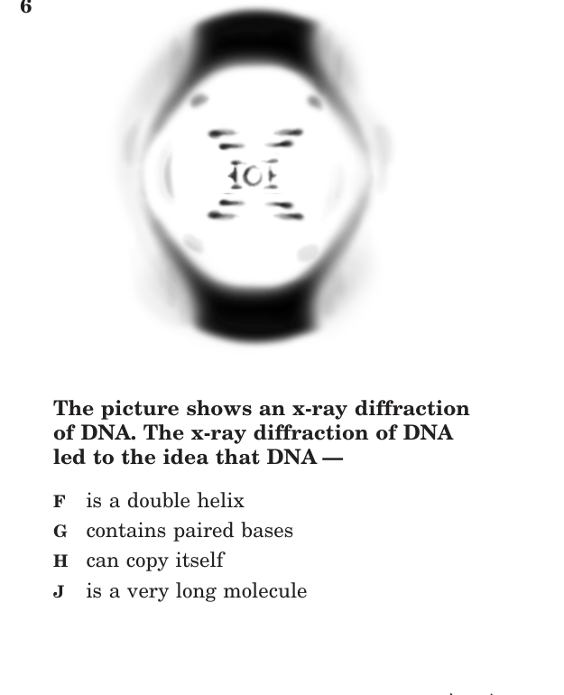

- DNA is a double helix of nucleotides (A-T, G-C)
- Genes are DNA segments that code for proteins
- The genetic code is virtually the same for all life
- Compare DNA models for effectiveness
- DNA structure understanding has evolved with technology
- Modern advances: Human Genome Project, sequencing
- NOT expected to know specific scientists' contributions
- Genotype vs. phenotype
- Punnett squares: monohybrid AND dihybrid crosses
- Incomplete dominance and codominance
- Sources of genetic diversity; probability of trait distribution
- NOT expected: sex-linked or polygenic inheritance
- Meiosis in general terms (NOT stages by name)
- Differentiate meiosis end products from mitosis
- Why meiosis is important for sexual reproduction
- Sources of heritable variation: recombination, replication errors, environment
- Genetic engineering tools: PCR, restriction enzymes, gel electrophoresis, CRISPR, plasmids
- Applications: medicine (insulin, growth hormone), agriculture (pest-resistant crops)
- Debate pros and cons of synthetic biology
- Evaluate evidence for how tools alter genomes
| Term | One-Line Definition |
|---|---|
| DNA | Double-helix molecule made of nucleotides; carries genetic instructions |
| Nucleotide | Building block of DNA/RNA: sugar + phosphate + nitrogenous base |
| Gene | Segment of DNA that codes for a specific protein or trait |
| Chromosome | Structure of tightly coiled DNA; humans have 46 (23 pairs) |
| Allele | Different versions of the same gene (e.g., B = brown, b = blue) |
| Genotype | The genetic makeup of an organism (e.g., Bb, BB, bb) |
| Phenotype | The observable physical trait expressed (e.g., brown eyes) |
| Dominant | Allele that is expressed when at least one copy is present (capital letter) |
| Recessive | Allele only expressed when TWO copies are present (lowercase letter) |
| Homozygous | Two identical alleles for a trait (BB or bb) |
| Heterozygous | Two different alleles for a trait (Bb) |
| Punnett Square | Diagram that predicts the probability of offspring genotypes/phenotypes |
| Monohybrid Cross | Cross examining ONE trait (e.g., Bb x Bb) |
| Dihybrid Cross | Cross examining TWO traits at once (e.g., BbTt x BbTt) |
| Incomplete Dominance | Neither allele is fully dominant; heterozygote shows a BLEND (red + white = pink) |
| Codominance | Both alleles fully expressed; heterozygote shows BOTH traits (red AND white spots) |
| Meiosis | Cell division producing 4 genetically DIFFERENT cells with HALF the chromosomes (gametes) |
| Gamete | Sex cell (egg or sperm); haploid (half the chromosomes) |
| Diploid | Cell with two sets of chromosomes (2n); body cells |
| Haploid | Cell with one set of chromosomes (n); gametes |
| Crossing Over | Exchange of DNA between homologous chromosomes during meiosis; increases genetic diversity |
| Mutation | Change in DNA sequence; can be beneficial, harmful, or neutral |
| Genetic Diversity | Variety of genes in a population; increases survival chances |
| Genetic Engineering | Direct manipulation of an organism's DNA using technology |
| PCR | Polymerase chain reaction; makes millions of copies of a DNA segment |
| Restriction Enzyme | Enzyme that cuts DNA at specific sequences |
| Gel Electrophoresis | Technique that separates DNA fragments by size using electric current |
| CRISPR | Gene-editing tool that precisely cuts and modifies DNA at specific locations |
| mRNA | Messenger RNA; carries genetic code from DNA in nucleus to ribosome |
| Codon | Three-nucleotide sequence on mRNA coding for one amino acid (AUG = start) |
| Histone | Protein DNA coils around to compact into chromosomes |
- A1–2 questions
- BAbout 4 questions
- CAbout 7 questions
- D25 questions
- ADihybrid Punnett squares (two traits at once)
- BDrawing the structure of a ribosome
- CNaming all 20 amino acids
- DCalculating the molecular weight of DNA
Answer honestly — right or wrong, these help Mr. England see where you're starting.
- AYY, Yy, yy only
- BYY, yy only
- CYy only
- DYy, yy only
- A2 red, 2 white
- B2 red, 1 pink, 1 white
- C1 red, 2 pink, 1 white
- D1 red, 1 pink, 2 white
- Aphosphates
- Bsugars
- Chydrogen bonds
- Dnitrogenous bases
DNA (deoxyribonucleic acid) is the molecule that carries the genetic instructions for all known living organisms. It has a double helix shape — two strands twisted around each other like a twisted ladder.
Each strand is made of repeating units called nucleotides. Each nucleotide has three parts:
| Part | Function |
|---|---|
| Deoxyribose sugar | Five-carbon sugar that forms the "backbone" along with phosphate |
| Phosphate group | Links sugars together to form the backbone (sugar-phosphate backbone) |
| Nitrogenous base | The "rung" of the ladder; carries the genetic code. Four types: A, T, G, C |
The two strands are held together by hydrogen bonds between complementary bases. The base-pairing rules are absolute:
Adenine (A) always pairs with Thymine (T) | Guanine (G) always pairs with Cytosine (C)
A gene is a specific segment of DNA that contains the instructions for building one protein (or part of a protein). All cells in an organism have the same DNA, but different cells express (turn on) different genes — this is why a muscle cell is different from a nerve cell even though they have the same DNA.
DNA molecules are extremely long. To fit inside the tiny nucleus of a cell, DNA coils tightly around proteins called histones, forming structures called chromosomes. Humans have 46 chromosomes (23 pairs). Each chromosome contains hundreds to thousands of genes.
The genetic code is virtually universal — the same codons code for the same amino acids in almost every organism on Earth, from bacteria to humans. This is powerful evidence that all life shares a common ancestor.
Our understanding of DNA structure has evolved as technology improved:
| Advance | What It Revealed |
|---|---|
| X-ray diffraction (1950s) | Showed DNA is a double helix shape |
| Watson & Crick model (1953) | First 3D model of DNA double helix with base pairing |
| Sanger sequencing (1970s) | Method to read the exact order of bases in DNA |
| Human Genome Project (1990-2003) | Sequenced all ~3 billion base pairs of human DNA; helps find disease genes |
| Modern sequencing | Faster, cheaper DNA reading; enables personalized medicine and forensics |
Sanger sequencing (developed in the 1970s) was the first method to "read" the exact order of bases in a DNA strand. It works by creating copies of DNA that stop at each base position, then sorting them by length to reveal the sequence one base at a time. This was the technology used for the Human Genome Project, but it was slow and expensive — it took 13 years and ~$3 billion to sequence one human genome.
Modern next-generation sequencing can sequence an entire human genome in a single day for under $1,000. These advances have made possible: personalized medicine (tailoring drug treatments to a patient's specific genetic makeup), forensic DNA analysis (matching crime scene DNA to suspects), prenatal genetic testing, and tracing evolutionary relationships between species by comparing DNA sequences.
The VDOE framework states that "modern advances in science and technology have added to our understanding of the structure of DNA and its function." This illustrates the nature of science: knowledge grows as technology improves. Students are NOT expected to know specific scientists' contributions.
(2006-7) One of the factors allowing DNA to fit inside the nucleus of a cell is its ability to —
- ABinary fission
- BSexual reproduction
- CBudding
- DFragmentation
- Adenature from the effect of an enzyme
- Bbreak apart into separate genes
- Cextend to form very long, thin molecules
- Dcoil tightly around associated proteins
- ACGG
- BCGT
- CCGU
- DCGA
- ACreating communication between research centers
- BExplaining human cultural differences
- CClassifying man most accurately in the animal kingdom
- DFinding the genes responsible for many diseases
Meiosis is a special type of cell division that produces gametes (sex cells — eggs and sperm). Unlike mitosis, which produces 2 identical cells, meiosis involves two rounds of division and produces 4 genetically different cells, each with half the chromosome number of the parent cell.
In humans, body cells are diploid (2n = 46 chromosomes) — they have two sets of chromosomes (one from mom, one from dad). Gametes are haploid (n = 23 chromosomes) — they have only one set. When an egg (23) and sperm (23) fuse during fertilization, the resulting zygote has the full diploid number (46) restored. This is why meiosis is essential: without it, the chromosome number would double every generation.
You are NOT expected to name the individual stages of meiosis (prophase I, metaphase I, etc.). But you DO need to understand what happens in each of the two divisions:
| Division | What Happens | Result |
|---|---|---|
| Meiosis I | Homologous chromosomes separate. The matching pairs of chromosomes (one from mom, one from dad) line up together, and then are pulled to opposite sides of the cell. Crossing over occurs during this division — homologous chromosomes exchange segments of DNA, creating new allele combinations that didn't exist in either parent. | 2 cells, each with HALF the chromosomes (but each chromosome still has 2 sister chromatids) |
| Meiosis II | Sister chromatids separate. This is similar to mitosis — the two identical halves of each chromosome are pulled apart. No new DNA is copied. | 4 cells total, each haploid (n), each genetically UNIQUE |
Why crossing over matters: During Meiosis I, homologous chromosomes physically overlap and swap segments. This means the chromosomes in the resulting gametes are "shuffled" versions of the originals — they contain a mix of alleles from both grandparents. This is one of the most important sources of genetic variation.
| Feature | Mitosis | Meiosis |
|---|---|---|
| Purpose | Growth, repair, asexual reproduction | Produce gametes (sex cells) for sexual reproduction |
| Number of divisions | 1 | 2 |
| Daughter cells | 2 | 4 |
| Genetically | Identical to parent | Different from parent and each other |
| Chromosome number | Same as parent (diploid, 2n) | Half of parent (haploid, n) |
| Where it occurs | Body (somatic) cells | Reproductive organs (ovaries, testes) |
| Crossing over? | No | Yes — increases genetic diversity |
The VDOE framework requires you to "defend a claim that inheritable genetic variations may result from" three sources:
| Source | How It Creates Variation |
|---|---|
| Crossing over (recombination) | During meiosis, homologous chromosomes exchange segments of DNA. This shuffles alleles, creating new gene combinations that didn't exist in either parent. |
| Independent assortment | During meiosis, each pair of homologous chromosomes lines up randomly. This means each gamete gets a random mix of maternal and paternal chromosomes. |
| Random fertilization | Any sperm can fertilize any egg. With millions of possible sperm and eggs, each child is genetically unique. |
| Mutations (replication errors) | Errors during DNA replication can change the base sequence. If this occurs in a gamete, the mutation is passed to offspring. |
| Environmental factors | Radiation, chemicals, and other environmental agents can cause mutations in DNA. |
Why genetic diversity matters: The VDOE framework states: "Genetically diverse populations are more likely to survive changing environments." If all individuals in a population were genetically identical, one disease or environmental change could wipe them all out. Diversity means some individuals will have traits that let them survive.
(2002-11) A cow heterozygous for long hair (Ll) undergoes meiosis. What percentage of gametes will carry the dominant allele?
- Aincreased birthrates
- Bdisproportionate gender ratios
- Cincreased immigration rates
- Ddecreased disease resistance
- Asex cell (gamete)
- Bmuscle cell
- Cbone cell
- Dbrain cell
- A25%
- B50%
- C75%
- D100%
- Aincrease beneficial mutations
- Bproduce a different species
- Creduce genetic diversity
- Dincrease fertility
| Term | Definition | Example |
|---|---|---|
| Allele | Different versions of a gene | B (brown) and b (blue) are alleles of the eye color gene |
| Dominant | Expressed when at least one copy present | B (capital letter) |
| Recessive | Only expressed when TWO copies present | b (lowercase letter) |
| Homozygous | Two identical alleles | BB (homozygous dominant) or bb (homozygous recessive) |
| Heterozygous | Two different alleles | Bb (carries one of each; shows dominant phenotype) |
| Genotype | The genetic makeup (letters) | BB, Bb, or bb |
| Phenotype | The observable physical trait | Brown eyes or blue eyes |
A monohybrid cross examines the inheritance of ONE trait. To complete one:
Step 1: Write the genotypes of both parents (e.g., Bb x Bb). Step 2: Put one parent's alleles across the top and the other's down the side. Step 3: Fill in each box by combining the column allele with the row allele. Step 4: Count the genotype and phenotype ratios.
(2001-32) In pea plants, tall (T) is dominant to short (t). If two heterozygous tall plants are crossed, what percent of offspring will be short?
A dihybrid cross examines TWO traits simultaneously. This requires a 4×4 Punnett square (16 boxes). The SOL WILL test this.
How to set up a dihybrid cross: First, determine the possible gametes for each parent. A parent with genotype TtPp can produce 4 different gamete types: TP, Tp, tP, tp. These become the row and column headers of a 4×4 grid.
(2006-6) Two plants are crossed: TTPP x ttpp. What describes the offspring?
If you cross two F1 heterozygotes (TtPp × TtPp), you need a 4×4 Punnett square. Each parent can make 4 gamete types: TP, Tp, tP, tp. The resulting 16 boxes produce the famous 9:3:3:1 phenotype ratio:
| Phenotype | Genotypes | Count out of 16 |
|---|---|---|
| Tall + Purple (both dominant) | TTPP, TTPp, TtPP, TtPp | 9 |
| Tall + White (T dominant, pp recessive) | TTpp, Ttpp | 3 |
| Short + Purple (tt recessive, P dominant) | ttPP, ttPp | 3 |
| Short + White (both recessive) | ttpp | 1 |
- A75%
- B50%
- C25%
- D0%
- AThree-quarters tall and purple
- BAll tall and purple
- CThree-quarters short and white
- DAll short and white
- AOne in four
- BThree in four
- CTwo in four
- DFour in four
- AThe white parent carried a dominant allele
- BAll black rabbits in F2 are homozygous
- CAll white rabbits are heterozygous
- DAll F1 rabbits carried a recessive allele
Mendel discovered that one allele is completely dominant over another. But not all traits follow this simple pattern. The VDOE framework requires you to know two additional patterns:
In incomplete dominance, the heterozygote shows a phenotype that is a BLEND of the two homozygous phenotypes. Neither allele is fully dominant — they compromise.
Classic example: In snapdragons, red flowers (RR) crossed with white flowers (rr) produce PINK flowers (Rr). The red allele isn't strong enough to completely mask the white allele, so you get a blend. If you cross two pink snapdragons (Rr x Rr), the offspring are: 1 red (RR) : 2 pink (Rr) : 1 white (rr). This 1:2:1 phenotype ratio is the signature of incomplete dominance.
In codominance, the heterozygote shows BOTH parental phenotypes fully and equally — there is no blending. Both alleles are completely expressed.
Classic example: In some chickens, a cross between black (BB) and white (WW) produces black AND white spotted offspring (BW). Each feather is either black or white — they don't blend into gray. Both colors show distinctly. Another example: human blood types — a person with type AB blood has both A and B alleles fully expressed.
| Pattern | Heterozygote Phenotype | Key Word | Example |
|---|---|---|---|
| Complete dominance | Looks like dominant parent | Masks | Bb = brown eyes (brown masks blue) |
| Incomplete dominance | BLEND of both parents | Blend | RR=red, rr=white, Rr=PINK |
| Codominance | BOTH traits show fully | Both show | BB=black, WW=white, BW=black AND white spots |
The VDOE framework explicitly states that students are NOT responsible for sex-linked inheritance or polygenic inheritance. You won't need to solve X-linked Punnett squares or explain how traits like skin color are controlled by multiple genes. Focus on complete dominance, incomplete dominance, and codominance.
(2005-6) In snapdragons, both red and white are homozygous. When crossed, pink results. If two pink snapdragons cross, the offspring will be —
- Acarried only by females
- Ba recessive genetic trait
- Ca sex-linked gene
- Drequires both parents to be albinos
- Arearrangement of the sequence of bases to take place
- Bbase pairs to separate during transcription and replication
- Cnew bases to be incorporated into the DNA molecule
- Dconversion of bases to amino acids in the event of cell starvation
- Aexperience an increased risk of cancer
- Bexperience difficulties replicating RNA
- Cpass on these mutations to their offspring
- Ddevelop entirely new DNA sequences in all cells
- Apassed through blood contact
- Brelated to diet
- Chighly infectious
- Dgenetically based
Genetic engineering is the direct manipulation of an organism's DNA using technology. Scientists can add, remove, or modify genes to change how an organism functions. The VDOE framework lists several tools you must know:
| Tool | What It Does | Analogy |
|---|---|---|
| Restriction enzymes | Cut DNA at specific base sequences (like molecular scissors) | Scissors that only cut at specific words in a sentence |
| DNA ligase | Joins (glues) DNA fragments together | Molecular glue |
| Bacterial plasmids | Small circular DNA used to carry foreign genes into bacteria | A delivery truck carrying a package into a factory |
| PCR (Polymerase Chain Reaction) | Makes millions of copies of a specific DNA segment | A DNA photocopier |
| Gel electrophoresis | Separates DNA fragments by size using electric current | Sorting mail by size on a conveyor belt |
| CRISPR | Precisely edits DNA at a specific location — can cut, delete, or insert genes | Find-and-replace in a word processor |
| Field | Application | Example |
|---|---|---|
| Medicine | Producing human proteins in bacteria | Bacteria engineered to produce human insulin for diabetics |
| Medicine | Gene therapy | Replacing defective genes to treat genetic diseases |
| Agriculture | Pest-resistant crops | Bt corn produces a natural insecticide, reducing pesticide use |
| Agriculture | Disease-resistant crops | Papaya engineered to resist ringspot virus |
| Forensics | DNA fingerprinting | Using gel electrophoresis to match DNA at a crime scene |
| Research | Studying gene function | Knocking out a gene to see what happens without it |
Recombinant DNA is DNA that has been artificially created by combining DNA from two or more different sources (often different species). The process: (1) Use a restriction enzyme to cut the desired gene from organism A. (2) Use the same restriction enzyme to cut open a plasmid from a bacterium. (3) Insert the gene into the plasmid using DNA ligase. (4) Put the recombinant plasmid back into a bacterium. (5) The bacterium now produces the protein coded by the foreign gene. This is how bacteria are engineered to produce human insulin.
The VDOE framework specifically requires students to "debate the pros and cons of synthetic biology" and "evaluate and use credible, accurate, and unbiased resources" to assess genetic engineering. This means you must be able to argue BOTH sides using evidence, not just state an opinion.
| Pros (Benefits) | Cons (Risks/Concerns) |
|---|---|
| Can cure genetic diseases (gene therapy for sickle cell, cystic fibrosis) | Ethical concerns about "designer babies" — selecting traits like intelligence or appearance |
| Produces life-saving medicines (bacteria make human insulin for diabetics) | Could create new pathogens or bio-weapons if technology is misused |
| Increases food supply (drought/pest-resistant crops feed more people) | GMO crops may affect ecosystems if engineered genes transfer to wild plants |
| Reduces pesticide use (Bt corn produces natural insecticide) | Some critics argue long-term health effects of consuming GMOs are not fully studied |
| DNA forensics helps solve crimes and identify victims | Privacy concerns — who has access to your genetic data? |
| CRISPR could eliminate inherited diseases like Huntington's | CRISPR editing of human embryos raises questions about consent and unintended effects |
How to answer a debate question on the SOL: The SOL won't ask for your opinion. It will describe a scenario and ask you to identify a benefit OR a concern. Know examples from BOTH columns. If a question asks "what is a potential RISK of genetic engineering?" look for ecosystem effects, ethical concerns, or unintended consequences. If it asks about a BENEFIT, look for medical or agricultural applications.
(2001-20) Which is an example of a genetically engineered organism?
- ASeedless fruits from grafting
- BA plant that received external DNA to produce natural insecticides
- CA plant with naturally occurring medicinal properties
- DA new variety created by cross-pollination
- Arecombinant DNA
- Bmitochondrial DNA
- Cplasmid
- Dchloroplast DNA
- Aview DNA under a light microscope
- Bseparate DNA fragments by size
- Cprecisely edit DNA at a specific location in the genome
- Dmake millions of copies of a DNA segment
- Aeliminates the need for any medical treatment
- Bprovides a reliable, large-scale source of insulin for diabetics
- Ccures diabetes permanently
- Dmakes bacteria immune to all diseases
Flip ALL 28 flashcards, then score 8/10 on the quiz to unlock the Practice Test.
Print for quick reference.
Double helix of nucleotides (sugar + phosphate + base). A-T, G-C (RNA: A-U). Nitrogenous bases = genetic code. Genes = DNA segments coding for proteins. DNA coils around histones → chromosomes. Humans = 46 chromosomes. Code is universal across life. Human Genome Project sequenced all human DNA.
| Mitosis | Meiosis | |
|---|---|---|
| Purpose | Growth/repair | Make gametes |
| Divisions | 1 | 2 |
| Result | 2 identical, diploid (2n) | 4 different, haploid (n) |
| Variation | No | Yes (crossing over) |
Variation sources: crossing over, independent assortment, random fertilization, mutations, environmental factors. Gamete mutations are inherited; somatic mutations are not.
Dominant (capital) masks recessive (lowercase). Bb x Bb → 1 BB : 2 Bb : 1 bb = 3:1 phenotype ratio. Dihybrid TTPP x ttpp → all TtPp (all dominant). Homozygous = BB or bb. Heterozygous = Bb.
| Pattern | Heterozygote | Example |
|---|---|---|
| Incomplete dominance | BLEND | Red + white = pink |
| Codominance | BOTH show | Red AND white spots |
| Tool | Function |
|---|---|
| Restriction enzymes | Cut DNA at specific sequences |
| DNA ligase | Joins DNA fragments |
| PCR | Copies DNA millions of times |
| Gel electrophoresis | Separates DNA by size |
| CRISPR | Precisely edits DNA at specific location |
| Plasmids | Carry genes into bacteria |
Recombinant DNA = DNA from 2+ species combined. Applications: insulin production, pest-resistant crops, gene therapy, forensics.
BIO.5 Practice Test
Released Virginia SOL questions —

- Ais a very long molecule
- Bcan copy itself
- Ccontains paired bases
- Dis a double helix
- AmRNA
- BRibosomes
- CATP
- DCell membrane
- Ametabolic rates
- Bcell shape
- CDNA
- Dcell size
- AOnly mitosis must occur in sexual reproduction.
- BNew combinations of genes result from sexual reproduction.
- CSexual reproduction may occur at a faster rate.
- DMutations are more likely to occur in asexual reproduction.
- AFlies have wing lengths ranging from very long to very short.
- BFlies with long wings are less likely to survive.
- CFlies with long wings can produce offspring with short wings.
- DFlies with short wings prefer to mate with flies with long wings.
- AAn image indicating the shape of a DNA molecule
- BAn analysis of the chemical makeup of a DNA molecule
- CA thought that DNA carries genetic information
- DA theory about how DNA conveys genetic information
- AHe received a recessive allele from each parent.
- BHe received a dominant allele from each parent.
- CHe received a recessive allele from his mother and a dominant allele from his father.
- DHe received a dominant allele from his mother and a recessive allele from his father.
- AR and r
- BR only
- Cr only
- DRr only
- ATwo in four
- BThree in four
- CFour in four
- DOne in four
- Adecreasing the number of antibodies produced by pets
- Baltering the chromosomes of healthy pets
- Cmaking more treatments available for pets
- Didentifying new diseases spread by pets
- AIt disproved the theory of spontaneous generation.
- BIt supported hypotheses about the origin of life.
- CIt provided an alternative to the cell theory of life.
- DIt explained the method by which natural selection occurs.
- ADetermine the length of the moth reproductive cycle in normal wheat.
- BDetermine whether moths in test wheat can be controlled with chemical sprays.
- CMonitor numbers of moth species infesting normal wheat.
- DMonitor moth populations in fields planted with test and normal wheat.
- Atest for chemicals that might poison fish and cause algae to grow
- Bmeasure the dissolved oxygen content in pond-water samples
- Clook for sources of pollution that may be affecting the pond
- Dmeasure the amount of light at various levels in the pond
- AThe shape of the DNA molecules in cells
- BThe number of chromosomes in each cell
- CThe sequence of DNA nucleotides in cells
- DThe size of each chromosome in a cell
- Aavailability of food sources at different stages
- Btype of DNA present at each developmental stage
- Ccombination of genetic material inherited during fertilization
- Ddifferent sets of genes expressed at each stage of development
- ABiology textbooks and the encyclopedia
- BVirginia native plant checklists and plant identification keys
- CFossil records and historical society publications
- DVirginia newspapers and science journals
- Aexposed to a different ant species
- Bof a different species
- Cwith its leaves left intact
- Dthat are dormant
- Aview DNA under a microscope
- Bseparate DNA fragments by size
- Cprecisely edit DNA at specific genome locations
- Dcopy DNA millions of times
- Ahold the acidity of the water constant
- Bvary the temperature of the water used
- Ccontrol the final algae population sizes
- Duse the same species of algae in all trials
- AInheritance alone may not account for thick leg muscles
- BDogs with thick muscles can't survive indoors
- CThick muscles require more exercise
- DThick muscles are associated with coat thickness
⏳ Complete the Practice Test to see your results.